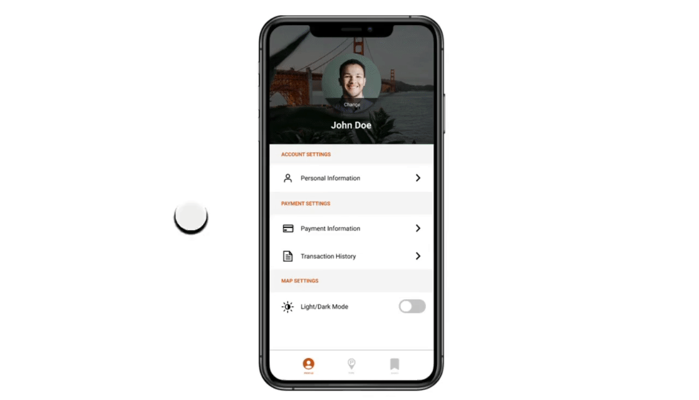
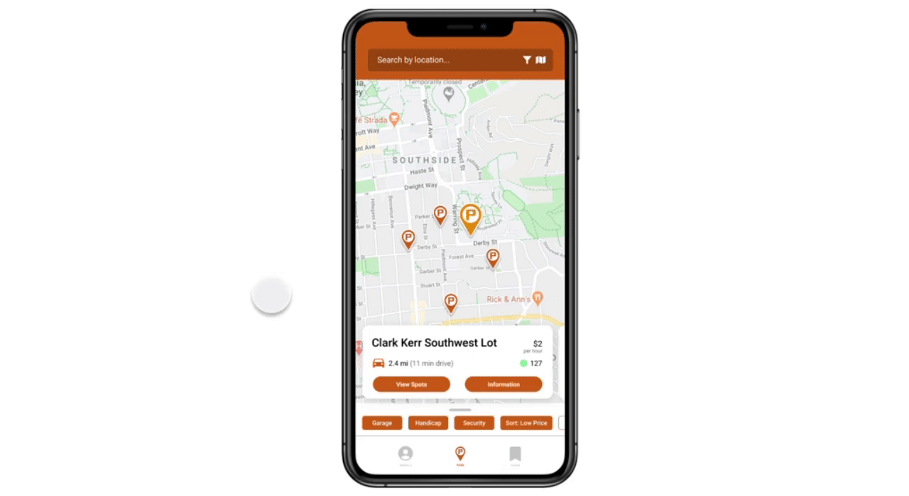
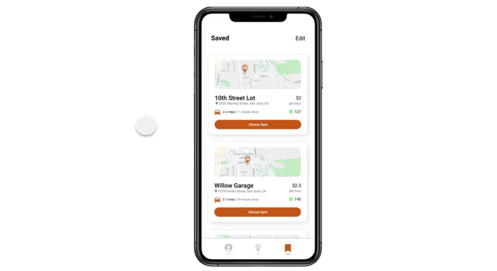

Directed Onboarding
After opening the app, new users are prompted to create an account
by entering their phone number, name, vehicle information, and preferred payment method.
This serves to make all future parking experiences simpler, such as
paying for parking and identifying where they last parked.

Once finished or skipped, users can choose to learn how to use the app
in 6 simple onboarding steps.

Payment Settings
Entering their payment information allows for future integration
of an in-app parking ticket payment system. Users can easily make
purchases and keep track of their payment history.

Location Search and Filter
Instead of first choosing from a list of all parking lots and garages compatible
with JAPA, users can freely search for their destination. This new workflow and
structure allows for easy scalability and gives more control to users.

To further narrow the search, users can customize their preferences with the
filter feature.
Quick Look to List View
Quick look serves to show users parking availability without having to click
into a lot or garage for more information. List view serves to include users
that may be short on time and want to see all the nearby lots at once.

Parking Facility Information
The parking facility information page has been broken down into more digestible
parts, optimized for quick eye scanning. Users can see pricing, hours, parking
availability, directions, contact information, travel time, and any key information.

Parking Lot and Garage Layout
Once users have committed to a parking facility, the ability to check multiple levels
is available. In the new parking layout, users can easily decide which level to park on
based on the color coded parking spots. If a level is predominantly red, users can rule
it out immediately.

Driver Safety
Alerts users that they cannot use their phone while driving and all functions will be
disabled until they've reached a stop. This will ensure that drivers avoid unsafe driving
unless there is a passenger in the vehicle.

Saved Lots
Users can save their frequented lots/garages to check parking availability quickly without
having to search for the location. They can also delete any locations they no longer visit.

 We identified multiple ways in which these competitors provide a better user experience than FreeBites:
1. More customizability and control to users
2. Ability to see live food availability updates
3. Clear linking between pages
4. Connects people with free food opportunities quickly and efficiently
5. Builds higher credibility between food sharers and seekers
We identified multiple ways in which these competitors provide a better user experience than FreeBites:
1. More customizability and control to users
2. Ability to see live food availability updates
3. Clear linking between pages
4. Connects people with free food opportunities quickly and efficiently
5. Builds higher credibility between food sharers and seekers


 We took to the drawing board and threw some sketches together. We each brainstormed 2-4 sketches on our own and then reconvened to identify any overlapping ideas and
discuss what direction and style we wanted the project to go in.
We took to the drawing board and threw some sketches together. We each brainstormed 2-4 sketches on our own and then reconvened to identify any overlapping ideas and
discuss what direction and style we wanted the project to go in.
 1. Too much effort
1. Too much effort 1. Difficult to see entire level
1. Difficult to see entire level 1. Brighter red
1. Brighter red 1. Unclear buttons
1. Unclear buttons